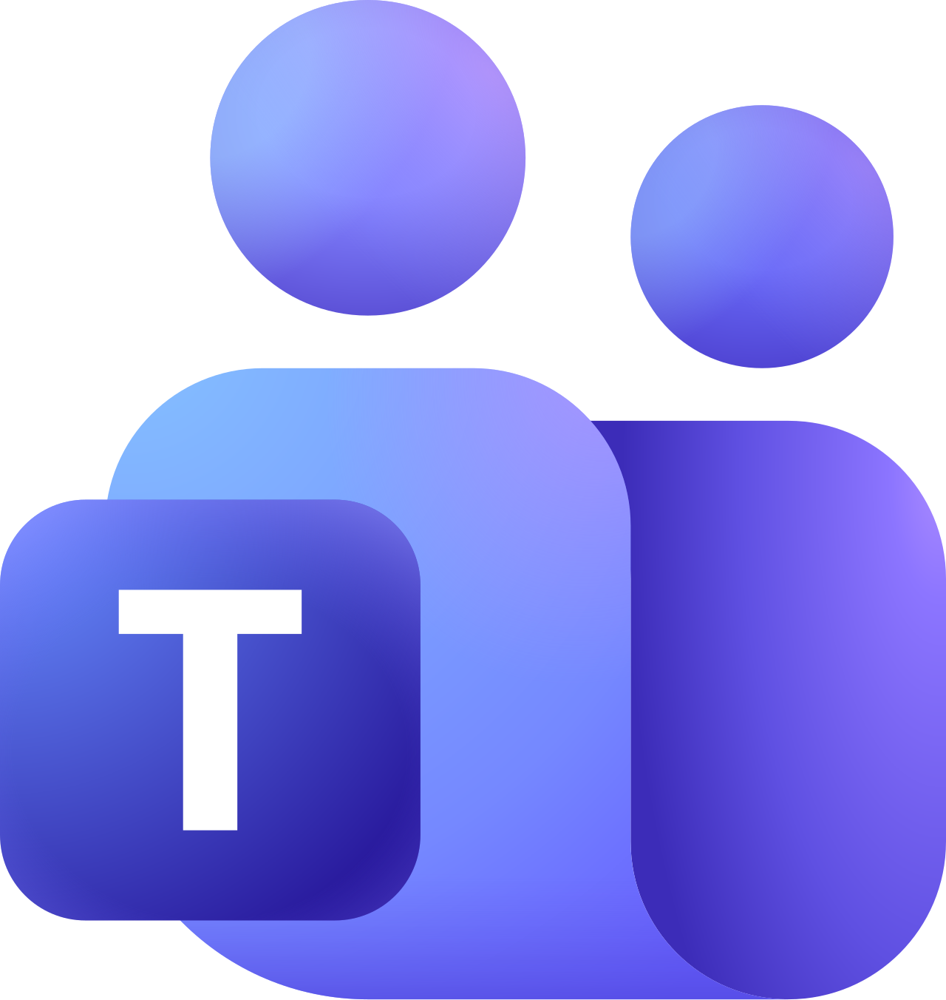
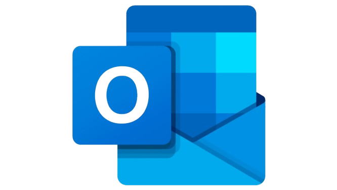
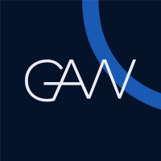
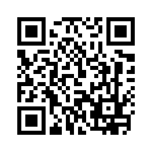

Bem-vindo equipe!


Utilizamos a plataforma Microsoft TEAMS para nos comunicar dentro do escritório. Caso peça algum delivery de comida, enviar o código da entrega no chat GAW - GERAL.

Utilizamos a plataforma Outlook Classic para enviar e receber os e-mails corporativos.
Utilizamos a plataforma MicroSIP para realizarmos ligações. Cada funcionário recebe um RAMAL único, que serve para receber e realizar ligações entre os demais funcionários da empresa.

Através do nosso site interno, você poderá abrir um chamado caso precise de auxílio técnico, seja com equipamento ou problema na máquina.

Utilize seu dispositivo móvel para scanear o QR CODE para ter acesso ao nosso Wi-fi.